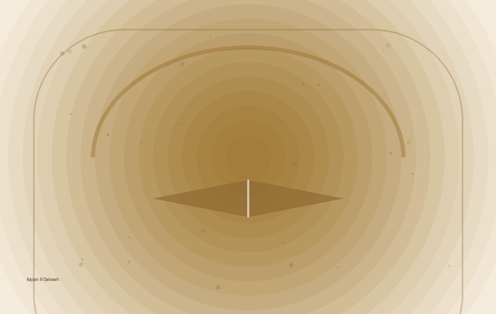
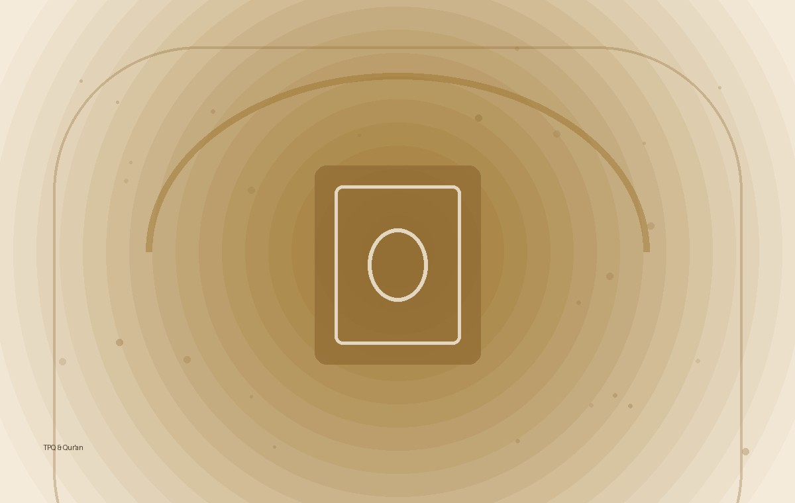
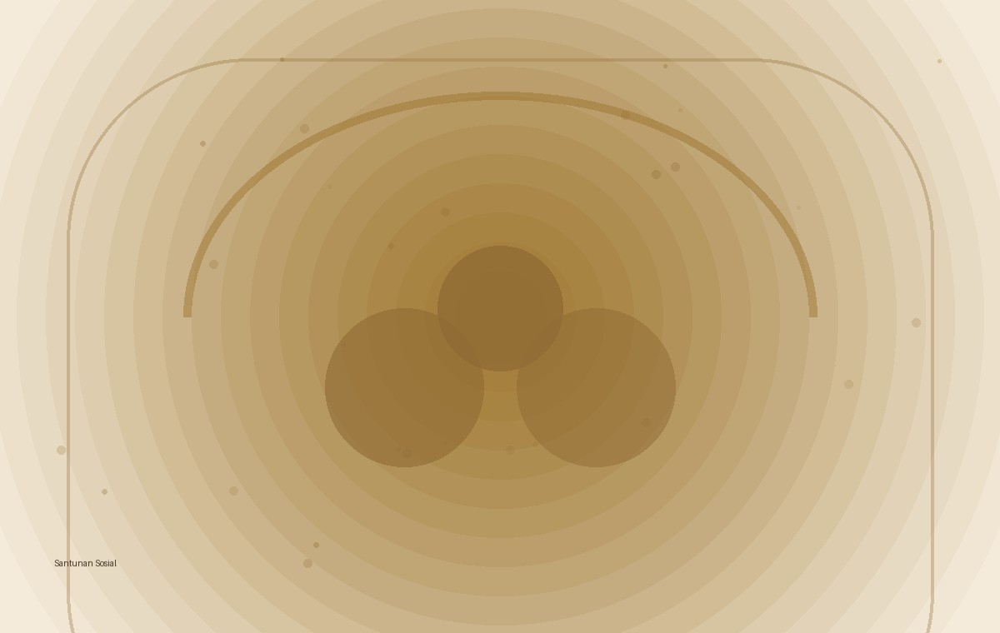
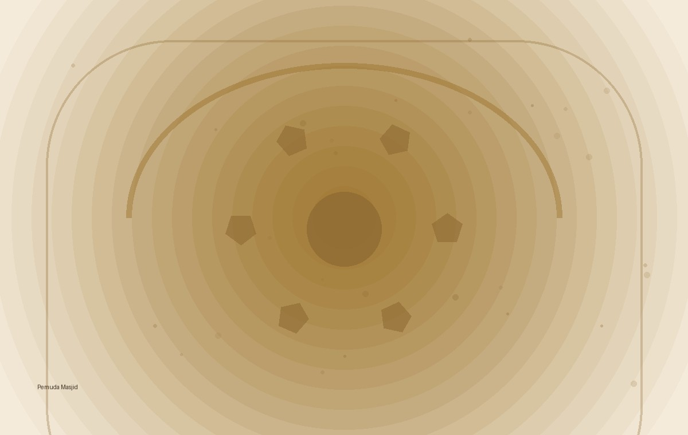

Masjid Jami'
At-Taqwa
Ruang ibadah, silaturahmi, dakwah, dan pelayanan umat untuk warga Bumisari dan sekitarnya.
Bersama & bertumbuh
Untuk kemaslahatan
Rumah yang menghidupkan
silaturahmi.
Website informasi digital Masjid Jami' At-Taqwa Bumisari Natar.
“Dirikanlah salat dan tunaikanlah zakat.”
QS. Al-Baqarah: 43Masjid Jami' At-Taqwa menjadi tempat ibadah sekaligus ruang berkumpulnya masyarakat. Melalui kegiatan keagamaan, sosial, pendidikan, dan kepemudaan, masjid diharapkan terus menjadi pusat kebaikan yang dekat dengan jamaah.
5 ruang kebaikan.
Klik setiap card untuk melihat detail program.
10 agenda jamaah.
Semua tanggal, waktu, judul, dan deskripsi di bawah bisa kamu edit langsung dari file index.html lewat VS Code.
10 kegiatan masjid.
Daftar kegiatan siap kamu isi dan sesuaikan dengan kegiatan nyata Masjid Jami' At-Taqwa.
Jejak kebersamaan.
Ruang dokumentasi kegiatan Masjid Jami' At-Taqwa.




Tetap terhubung
dengan At-Taqwa.
Ikuti informasi, dokumentasi, dan kabar terbaru kegiatan Masjid Jami' At-Taqwa melalui media sosial.
Temukan kami.
Datang, beribadah, bersilaturahmi.